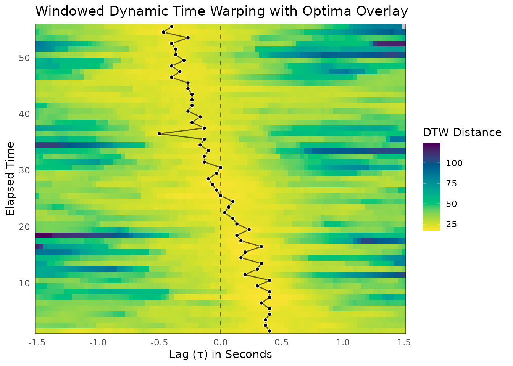

Analyzing Interpersonal Synchrony with Windowed Dynamic Time Warping
This vignette walks through a complete Windowed Dynamic Time Warping
(WDTW) analysis using the bsync package. While Windowed
Cross-Correlation (WCC) is excellent for capturing linear relationships,
WDTW excels at finding similarities in signals that might be distorted,
stretched, or compressed in time.
It is important to remember that WDTW calculates a distance metric rather than a correlation. This means that lower values indicate stronger synchronization (a smaller distance between the signals).
1. Simulating Realistic Dyadic Data
To demonstrate the workflow, we will simulate an interaction between two participants (Person A and Person B) captured at 30 Hz. We will generate smooth continuous data to simulate bodily motion.
In this scenario, Person A leads the interaction by 15 frames (0.5 seconds) at the start. Over the course of the 60 seconds, the dynamic smoothly transitions until Person B leads by 15 frames at the end.
library(bsync)
set.seed(2026)
# Simulation parameters
fs <- 30
n_frames <- 1800 # 60 seconds of data
# Generate a smooth base signal using a 30-frame moving average.
raw_noise <- rnorm(n_frames + 300)
base_signal <- stats::filter(raw_noise, rep(1/30, 30), circular = TRUE)
base_signal <- as.numeric(base_signal)
person_A <- numeric(n_frames)
person_B <- numeric(n_frames)
# Continuous lag shift: Person A leads by 15 frames, smoothly transitioning to B leading
lag_shifts <- round(seq(15, -15, length.out = n_frames))
for (i in 1:n_frames) {
idx_A <- 150 + i
idx_B <- 150 + i - lag_shifts[i]
# Add slight independent noise to mimic realistic measurement error
person_A[i] <- base_signal[idx_A] + rnorm(1, sd = 0.05)
person_B[i] <- base_signal[idx_B] + rnorm(1, sd = 0.05)
}
dyad_data <- data.frame(
time = seq(0, by = 1/fs, length.out = n_frames),
person_A = person_A,
person_B = person_B
)2. Calculating Windowed Dynamic Time Warping
With our data ready, we can run the primary wdtw()
function. This function slides a window across the time series and
calculates the DTW alignment distance at various lags within each
window.
We strongly recommend leaving scale_data = TRUE (the
default). DTW distances are highly sensitive to the scale of the input
variables, and z-score standardizing the data ensures that the resulting
cost matrix is driven by the structural shape of the behaviors rather
than arbitrary measurement units.
wdtw_results <- wdtw(
x = dyad_data$person_A,
y = dyad_data$person_B,
time = dyad_data$time,
window_size = 90,
lag_max = 45,
window_increment = 30,
lag_increment = 1,
scale_data = TRUE
)
# View a summary of the results
print(wdtw_results)
#>
#> ── Windowed Dynamic Time Warping Analysis ──────────────────────────────────────
#> Total Windows: 55
#> Total Lags Tested: 91
#> Window Size: 90
#> Max Lag: 45
#> Overall Mean Distance: 36.6055The wdtw() function returns a list object of class
wdtw_res containing the results data frame, the overall
mean distance, and the input settings.
3. Optima Extraction (Finding the Minima)
While the full distance matrix is informative, we often want to extract the precise lags where the alignment is optimal within each time window. For correlation (WCC), optimal alignment means the highest value (peaks). For distance metrics (WDTW), optimal alignment means the lowest cost (valleys).
The pick_optima() function handles this seamlessly.
Because we are providing a wdtw_res object, the function
automatically infers that it should execute a global search across the
window to find the absolute minimum distance
(search_method = "global" and
find_min = TRUE).
# Extract optimal alignment lags (valleys) using the default global search
wdtw_optima_df <- pick_optima(wdtw_results)
summary(wdtw_optima_df)
#>
#> ── WDTW Optima Summary ─────────────────────────────────────────────────────────
#>
#> ── Completeness ──
#>
#> • Total time windows: 55
#> • Valid optima retained: 55 (100%)
#> • Optima dropped (NA): 0 (0%)
#>
#> ── Lag Directionality (Leadership) ──
#>
#> • Positive Lags (x leads y): 24 (43.6%)
#> • Negative Lags (y leads x): 29 (52.7%)
#> • Zero Lags (Simultaneous): 2 (3.6%)
#>
#> ── Optimum Value Distribution ──
#>
#> 0% 25% 50% 75% 100%
#> 17.0898 19.0493 19.8450 20.5687 23.3458This returns a wdtw_optima data frame containing the
elapsed time indices, the optimal lags, and the corresponding DTW
distance values. The console output confirms that the search mode was
successfully set to “Valleys (Minima)” using a “global” search
method.
4. Visualizing the Results
Finally, we can visualize the shifting synchronization landscape. The
plot_optima_overlay() function detects that it is working
with a wdtw_res object and automatically applies a
sequential viridis color palette to map the distances, while plotting
the global minima points on top.
By passing the time_step argument, the axes are
automatically converted from raw frame indices to seconds.
plot_optima_overlay(
surface_obj = wdtw_results,
optima_df = wdtw_optima_df,
time_step = 1 / fs,
show_zero_lag = TRUE
)
In the resulting plot, lighter colors represent smaller distances (stronger synchrony). You will see a diagonal track corresponding to the simulated shift in the dyad’s interaction. The overlaid points map exactly to the lowest alignment costs, smoothly tracing the transition from Person A leading to Person B leading.